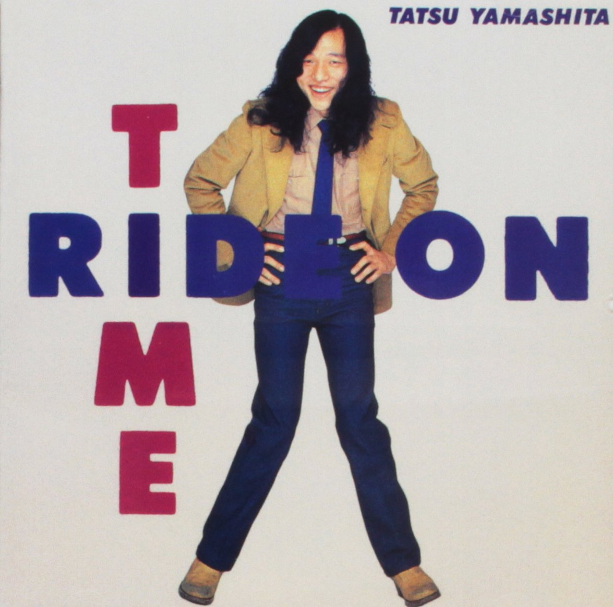

Day 38

山下達郎 - Someday - RIDE ON TIME - 1980
这其实是一个月前的新发现。City pop听起来真的很轻松，跟比如说Janis Joplin完全不一样。
時々人の心の中が 信じられない出来事がある 皆 自分だけ逃げてしまおうと 愛を傷つけて通り抜ける SOMEDAY 一人じゃなくなり SOMEDAY 何かが見つかる 淋しげに夜の街一人きり歩けば 本当の悲しみを知っている人に会う 二度と会えない素直な愛に さよならをする人など居ない だからいつまでも顔を曇らせ つらい日を送る事はない SOMEDAY 一人じゃなくなり SOMEDAY 何かが見つかる めまいするほど速い毎日の時の波 押し寄せて流される冷たそうな人の海 だけどいつまでも顔を曇らせ つらい日を送ることはない SOMEDAY 一人じゃなくなり SOMEDAY 何かが見つかる